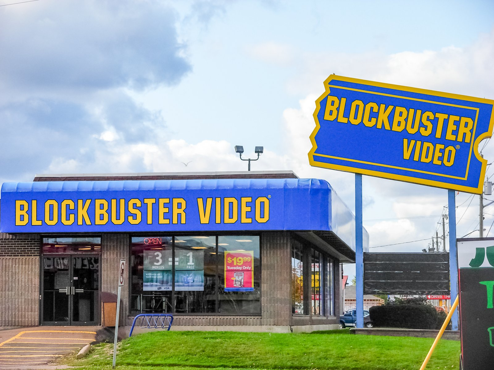
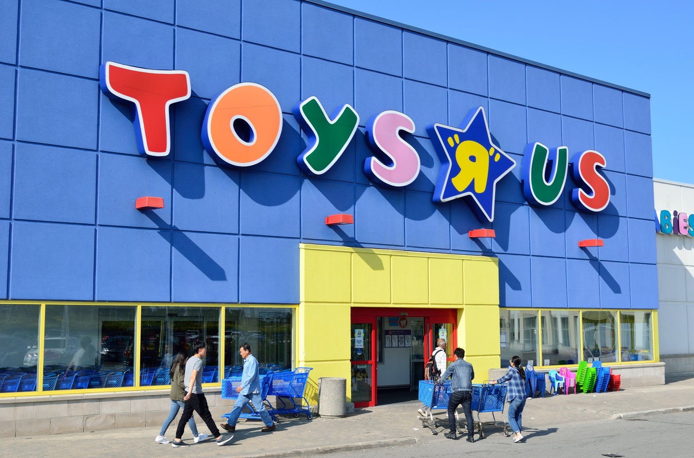

Dead Brands Services
Dead Brands Are Sitting on Gold. Nobody Wants to Dig It Up.
Every year, household names go quiet. The factories close, the ads stop, the products vanish from the shelves — but the memory doesn’t. Millions of people still know the name and still feel something when they hear it. That memory is an asset. And right now, most of it is just sitting there.

The asset nobody prices in
When a company dies, the accountants sell the forklifts and auction the office furniture. What usually gets left on the table is the most valuable thing in the building: the brand. A name people already know. A logo that still triggers a feeling. A jingle someone’s dad still hums.
Here’s the math that matters: building awareness from zero is the most expensive thing in business. A dead brand hands you a head start — sometimes decades of it — for a fraction of what it would cost to build from scratch. The trust was earned back when the brand was alive. The nostalgia is already installed in your customer’s brain. You don’t have to explain who you are; you just have to remind people why they liked you.
Nostalgia is an emotion, not a strategy
Now the honest part, because this is where most revival attempts face-plant. Memory alone doesn’t sell anything. Every dead brand died for a reason — bad economics, a product nobody needed anymore, management that drove it into a ditch, a market that moved on.
So before anyone spends a dollar on a revival, three questions have to get answered straight:
- Is the IP actually available? Trademarks lapse, get abandoned, or sit in some holding company’s drawer. You can’t revive what you can’t legally own or license.
- Why did it die? If the product was broken, the brand equity is a headstone. If the economics were broken but the product was loved, that’s a green light.
- Does the math work today? Distribution is different now. A brand that needed ten thousand retail doors in the eighties can launch direct-to-consumer in a weekend. Some dead brands are more revivable now than they ever were alive.
If the answer to all three is yes, you’ve got something worth building on. If any one of them is no, walk away — nostalgia won’t pay the rent.
How a revival actually works
Forget the Hollywood version where someone buys a logo and slaps it on random products. A real revival is unglamorous:
- Find and secure the IP. Trademark searches, ownership chains, sometimes negotiating with whoever’s sitting on the rights. This is detective work.
- Validate the memory. Does anyone under forty know the name? Does anyone over forty still care? The revival lives or dies on this.
- Launch lean. You don’t rebuild the old company. You rebuild the feeling, attached to a product that makes sense right now — often licensed, often direct-to-consumer, often one hero product instead of a catalog.
- Tell the story straight. The comeback narrative is the marketing. People love a resurrection story — but only if it’s honest. Fake heritage gets sniffed out fast.
That’s the playbook. It’s not magic; it’s just work most people skip because “buy a dead brand” sounds like a punchline instead of a strategy.

What I do with all this
I’m David Strausser, CEO of Dead Brands, LLC — reviving dormant brands is literally in the company name. I track dead and dormant brands, assess which ones are actually revivable using the three-question test above, and work the full cycle: securing the IP, building the revival plan, and launching it without the bloat that killed the original in the first place.
Go deeper
The full dead-brands playbook
This page is the overview. The full guide walks through how dead brands get found, valued, acquired, and relaunched — and how the Dead Brands team runs the whole process. If you’re sitting on a dormant brand, or you’ve got your eye on one, read it.
Frequently asked questions
Do you buy dead brands outright?
Sometimes. It depends on the brand, the price, and the answers to the three questions above. Some deals are acquisitions, some are licenses, some are partnerships with whoever holds the rights. The structure follows the opportunity — what matters is ending up with clean, defensible rights to the IP.
I own a dormant brand. Can you help me relaunch it?
Yes — that’s a conversation worth having. We’ll start with an honest assessment: what you own, what the market remembers, and whether the economics work today. If the answer is yes, we build the lean launch plan. If it’s no, I’ll tell you that too, and why.
What makes a dead brand revivable vs. actually dead?
Three things: the IP has to be securable, the brand has to have died from fixable causes (bad economics, bad management, bad timing — not a product nobody wanted), and there has to be a real audience that still cares. Miss any one of those and you’re polishing a headstone.
Got your eye on a dead brand? Let’s talk.
Thirty minutes. Straight answers about whether the brand is worth reviving — and what it would take.